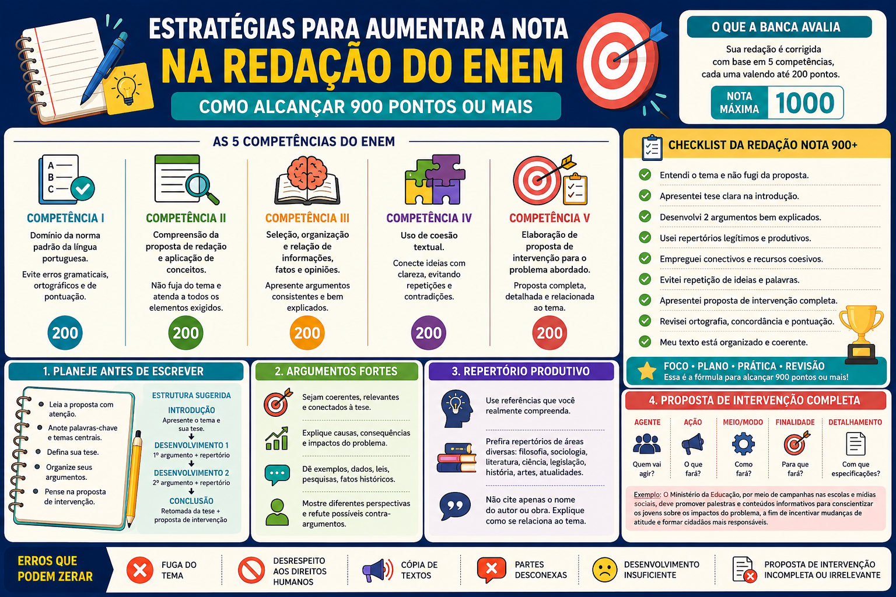

Estratégias para Aumentar a Nota na Redação do ENEM: como alcançar 900 pontos ou mais
Aumentar a nota na redação do ENEM não depende apenas de escrever textos longos, utilizar palavras difíceis ou memorizar repertórios. O desempenho melhora quando o candidato compreende os critérios de correção e desenvolve estratégias específicas para atender às cinco competências avaliadas.
Uma redação bem avaliada precisa apresentar domínio da modalidade escrita formal da Língua Portuguesa, compreensão do tema, argumentos organizados, mecanismos de coesão e uma proposta de intervenção completa e relacionada ao problema discutido.
Neste conteúdo, você conhecerá estratégias para aumentar a nota na redação do ENEM, melhorar cada competência, evitar erros frequentes e construir um texto dissertativo-argumentativo mais claro, consistente e bem planejado.

Como funciona a nota da redação do ENEM?
A redação do ENEM é avaliada a partir de cinco competências. Cada uma pode receber até 200 pontos, totalizando a nota máxima de 1000 pontos.
| Competência | O que é avaliado | Pontuação máxima |
|---|---|---|
| Competência I | Domínio da modalidade escrita formal da Língua Portuguesa. | 200 pontos |
| Competência II | Compreensão do tema, atendimento ao tipo textual e uso de repertório. | 200 pontos |
| Competência III | Seleção, organização e interpretação de informações e argumentos. | 200 pontos |
| Competência IV | Uso de mecanismos linguísticos para articular as partes do texto. | 200 pontos |
| Competência V | Elaboração de proposta de intervenção relacionada ao problema. | 200 pontos |
Estratégia central: para aumentar a nota, não basta melhorar apenas a gramática. É necessário trabalhar simultaneamente a compreensão do tema, a argumentação, a coesão e a proposta de intervenção.
O que realmente faz uma redação alcançar 900 pontos?
Uma redação de alto desempenho apresenta equilíbrio entre diferentes aspectos. O texto precisa estar correto do ponto de vista linguístico, mas também deve demonstrar domínio do tema e capacidade de desenvolver um raciocínio próprio.
Características de uma redação com nota alta
- tese clara e relacionada ao tema;
- dois argumentos bem delimitados;
- repertório sociocultural produtivo;
- explicações que aprofundam os argumentos;
- conectivos utilizados de maneira adequada;
- poucos desvios gramaticais;
- proposta de intervenção completa;
- relação lógica entre introdução, desenvolvimento e conclusão.
O candidato que pretende alcançar 900 pontos ou mais deve evitar uma abordagem baseada apenas em fórmulas decoradas. As estruturas podem ajudar, mas precisam ser preenchidas com ideias específicas e relacionadas à proposta.
Estratégia 1: interprete corretamente o tema
Antes de começar a escrever, identifique com precisão o assunto e o recorte proposto. Um dos erros mais graves é escrever sobre um tema parecido, mas não exatamente sobre aquilo que foi solicitado.
Durante a leitura da proposta, procure identificar:
- o assunto geral;
- o problema específico;
- o grupo social envolvido;
- o espaço ou contexto indicado;
- os limites estabelecidos pela frase temática.
Assunto geral: tecnologia.
Recorte temático: desafios para combater a desinformação no ambiente digital brasileiro.
Uma redação que fale apenas sobre os benefícios e malefícios da tecnologia não atende completamente ao recorte.
Atenção ao tangenciamento
O tangenciamento ocorre quando o texto aborda apenas parte do tema ou desenvolve uma discussão muito ampla, sem responder ao recorte proposto.
Estratégia 2: planeje a redação antes de escrever
O planejamento evita contradições, repetições e mudanças inesperadas de direção. Antes de redigir, organize um pequeno projeto de texto.
Planejamento em cinco etapas
- Identifique o problema central.
- Formule uma tese.
- Escolha o primeiro argumento.
- Escolha o segundo argumento.
- Pense em uma proposta de intervenção relacionada aos argumentos.
Tema: desafios para combater a desinformação no Brasil.
Tese: o combate à desinformação é dificultado pela falta de educação midiática e pela circulação impulsiva de conteúdos.
Argumento 1: ausência de formação para análise crítica das informações.
Argumento 2: compartilhamento de publicações sem verificação.
Intervenção: educação midiática nas escolas e mecanismos de verificação nas plataformas.
Não comece diretamente pela introdução
Reserve alguns minutos para definir a tese e os dois argumentos. Essa decisão reduz a possibilidade de perder o foco durante o desenvolvimento.
Estratégia 3: construa uma tese clara
A tese é o posicionamento central defendido na redação. Ela deve responder ao tema e indicar a direção da argumentação.
Tese genérica
A desinformação é um problema que precisa ser resolvido.
A afirmação não apresenta uma análise específica.
Tese delimitada
A falta de educação midiática e o compartilhamento impulsivo de conteúdos dificultam o combate à desinformação no Brasil.
A afirmação apresenta posicionamento e indica dois argumentos.
Uma tese eficiente ajuda a organizar toda a redação. Se o candidato indicar dois fatores na introdução, cada um deles poderá ser desenvolvido em um parágrafo argumentativo.
Estratégia 4: desenvolva dois argumentos consistentes
É preferível apresentar dois argumentos bem explicados a incluir várias ideias superficiais. Cada parágrafo de desenvolvimento deve possuir uma função definida dentro do texto.
Um desenvolvimento consistente pode conter:
- tópico frasal;
- explicação do argumento;
- repertório ou exemplo;
- análise;
- fechamento relacionado à tese.
Estrutura de um parágrafo argumentativo
“Primeiramente, [apresentação do argumento]. Isso ocorre porque [explicação]. Nesse sentido, [repertório ou exemplo] demonstra [análise da referência]. Desse modo, [relação do argumento com o problema].”
Exemplo de desenvolvimento
“Primeiramente, a ausência de educação midiática favorece a circulação de notícias falsas. Isso ocorre porque muitos usuários não dominam procedimentos de verificação de fontes e comparação de informações. Nesse sentido, o compartilhamento de publicações sem autoria identificada demonstra como a falta de leitura crítica amplia o alcance de conteúdos enganosos. Desse modo, a formação insuficiente para o uso consciente das mídias dificulta o enfrentamento da desinformação.”
Não transforme o desenvolvimento em lista
Apresentar várias causas ou consequências sem explicá-las enfraquece a argumentação. O corretor precisa compreender como e por que cada fator contribui para o problema.
Estratégia 5: explique mais e afirme menos
Muitos candidatos apresentam ideias verdadeiras, mas não demonstram a relação entre elas. Para aumentar a nota, transforme afirmações gerais em explicações.
Afirmação superficial
A falta de educação é responsável por muitos problemas.
Argumento explicado
A ausência de educação midiática dificulta o reconhecimento de fontes confiáveis, fazendo com que usuários compartilhem informações sem verificar sua origem.
Para aprofundar o raciocínio, faça perguntas ao próprio argumento:
- Por que isso acontece?
- Como esse fator contribui para o problema?
- Quem é afetado?
- Quais são as consequências?
- Que exemplo confirma essa ideia?
Estratégia de aprofundamento
Sempre que escrever uma afirmação importante, tente acrescentar uma frase iniciada por expressões como “isso ocorre porque”, “como consequência” ou “tal situação contribui para”.
Estratégia 6: use repertório sociocultural produtivo
O repertório sociocultural pode contribuir para a Competência II e fortalecer a argumentação. Entretanto, a referência precisa estar relacionada ao tema e ser explicada.
Podem ser utilizados como repertório:
- fatos históricos;
- livros;
- filmes e séries;
- conceitos filosóficos;
- teorias sociológicas;
- leis e documentos oficiais;
- pesquisas e dados estatísticos;
- acontecimentos sociais relevantes.
Repertório apenas citado
Segundo Paulo Freire, a educação transforma a sociedade.
Repertório produtivo
Ao defender uma educação capaz de desenvolver a consciência crítica, Paulo Freire ajuda a compreender a importância da formação dos indivíduos para a análise das informações que circulam socialmente.
Repertório produtivo: é aquele que não apenas aparece no texto, mas ajuda a explicar, comprovar ou aprofundar o argumento.
Estratégia 7: evite repertórios decorados e genéricos
Memorizar algumas referências pode ajudar, mas o candidato não deve inserir um autor, uma obra ou uma lei apenas porque já decorou uma frase.
O uso forçado de repertório costuma gerar:
- relação superficial com o tema;
- citações imprecisas;
- argumentos pouco desenvolvidos;
- sensação de texto pronto;
- perda de naturalidade.
Evite citações inventadas
Caso não tenha certeza sobre as palavras exatas de um autor, apresente a ideia por meio de paráfrase. Não atribua frases falsas a filósofos, escritores ou instituições.
Estratégia 8: melhore a Competência I
A Competência I avalia o domínio da modalidade escrita formal da Língua Portuguesa. Para melhorar a pontuação, o candidato deve reduzir desvios e demonstrar controle das estruturas sintáticas.
Os principais aspectos que exigem atenção são:
- ortografia;
- acentuação;
- concordância verbal e nominal;
- regência verbal e nominal;
- emprego da crase;
- pontuação;
- colocação pronominal;
- construção dos períodos.
Evite períodos excessivamente longos
Frases muito extensas aumentam o risco de erros de pontuação, concordância e organização sintática.
Período confuso
A desinformação que está presente nas redes sociais e que é compartilhada por muitas pessoas que não verificam as fontes acaba causando diversos problemas na sociedade que também não possui educação adequada.
Período organizado
A desinformação circula com facilidade nas redes sociais. Muitos usuários compartilham conteúdos sem verificar as fontes, o que amplia os impactos do problema.
Como revisar a Competência I
Durante a revisão, leia cada frase isoladamente e verifique se ela apresenta sentido completo, pontuação adequada e concordância entre os termos.
Estratégia 9: melhore a Competência II
Para obter uma boa pontuação na Competência II, o candidato precisa compreender a proposta, desenvolver o tema no formato dissertativo-argumentativo e mobilizar conhecimentos de diferentes áreas.
Algumas estratégias são:
- repetir mentalmente o tema antes de planejar;
- sublinhar as palavras centrais da proposta;
- manter o texto dentro do recorte;
- defender um ponto de vista;
- utilizar repertório relacionado à discussão;
- evitar trechos narrativos ou puramente descritivos.
Tema: desafios para a valorização dos povos tradicionais no Brasil.
Não basta escrever genericamente sobre preconceito ou diversidade. É necessário discutir especificamente a valorização dos povos tradicionais no contexto brasileiro.
Estratégia 10: melhore a Competência III
A Competência III está diretamente relacionada ao projeto de texto e à qualidade da argumentação. O candidato deve selecionar, organizar e interpretar informações em defesa de seu ponto de vista.
Para melhorar nessa competência:
- formule uma tese antes de começar;
- escolha argumentos diferentes;
- organize cada parágrafo em torno de uma ideia central;
- explique as relações de causa e consequência;
- conecte exemplos e repertórios à tese;
- evite contradições;
- mantenha progressão entre as partes do texto.
Projeto de texto simples
- Introdução: apresenta o problema e os dois argumentos.
- Desenvolvimento 1: explica o primeiro argumento.
- Desenvolvimento 2: explica o segundo argumento.
- Conclusão: propõe medidas relacionadas aos argumentos.
Estratégia 11: melhore a Competência IV
A Competência IV avalia os mecanismos linguísticos utilizados para articular as ideias. A coesão não depende apenas da presença de conectivos, mas da relação lógica entre frases e parágrafos.
| Relação de sentido | Conectivos possíveis |
|---|---|
| Adição | Além disso, ademais, também, ainda. |
| Explicação | Isso ocorre porque, uma vez que, visto que. |
| Causa | Em razão de, devido a, por causa de. |
| Consequência | Desse modo, como consequência, por isso. |
| Oposição | Entretanto, porém, contudo, apesar disso. |
| Exemplificação | Por exemplo, como demonstra, isso pode ser observado em. |
| Conclusão | Portanto, assim, diante do exposto, dessa forma. |
Não use conectivos mecanicamente
O conectivo precisa corresponder à relação existente entre as ideias. Utilizar “portanto” sem apresentar uma conclusão ou “porém” sem oposição pode prejudicar a coerência.
Evite repetições excessivas
Repetição inadequada
A sociedade precisa mudar. A sociedade precisa compreender o problema. A sociedade também deve cobrar soluções.
Retomada adequada
A sociedade precisa compreender o problema e cobrar soluções. Essa mobilização contribuirá para a transformação do cenário.
Estratégia 12: elabore uma proposta de intervenção completa
A proposta de intervenção deve apresentar uma medida concreta para enfrentar o problema discutido. Ela precisa estar relacionada aos argumentos desenvolvidos e respeitar os direitos humanos.
Uma proposta completa pode apresentar cinco elementos:
| Elemento | Pergunta respondida | Exemplo |
|---|---|---|
| Agente | Quem realizará a medida? | Ministério da Educação. |
| Ação | O que será feito? | Criar programas de educação midiática. |
| Meio ou modo | Como a ação será realizada? | Por meio de atividades escolares e campanhas. |
| Finalidade | Para qual objetivo? | Desenvolver a leitura crítica dos estudantes. |
| Detalhamento | Que informação adicional torna a medida específica? | Com participação de professores de diferentes disciplinas. |
Exemplo de proposta completa
“Portanto, cabe ao Ministério da Educação promover programas de educação midiática nas escolas, por meio de atividades voltadas à verificação de fontes e à análise de conteúdos digitais. Essas ações devem envolver professores de diferentes disciplinas, a fim de desenvolver a leitura crítica dos estudantes e reduzir o compartilhamento de informações falsas.”
Elementos presentes
- Agente: Ministério da Educação.
- Ação: promover programas de educação midiática.
- Meio: atividades de verificação e análise.
- Detalhamento: participação de professores de diferentes disciplinas.
- Finalidade: desenvolver a leitura crítica e reduzir a desinformação.
Estratégia 13: relacione a intervenção aos argumentos
A proposta de intervenção não deve aparecer como uma ideia desconectada no final do texto. Ela precisa responder aos problemas apresentados nos desenvolvimentos.
Desenvolvimento
O primeiro argumento aborda a ausência de educação midiática.
O segundo discute a responsabilidade das plataformas.
Intervenção coerente
Criar programas de educação midiática e aperfeiçoar os mecanismos de controle das plataformas.
Evite soluções vagas
Expressões como “é necessário conscientizar a população” ou “o governo deve tomar providências” são insuficientes quando não indicam quem agirá, o que será feito e como a medida será executada.
Estratégia 14: faça uma introdução objetiva
A introdução deve apresentar a discussão sem ocupar uma parte excessiva da redação. Em geral, o candidato pode organizar o primeiro parágrafo com contextualização, tese e argumentos.
“Com a ampliação do acesso às plataformas digitais, a circulação de informações tornou-se mais rápida e abrangente. Entretanto, esse avanço também favoreceu a propagação de conteúdos falsos no Brasil. Nesse contexto, a falta de educação midiática e o compartilhamento impulsivo dificultam o enfrentamento da desinformação.”
A introdução apresenta:
- uma contextualização;
- o problema;
- uma tese;
- dois argumentos.
Seja direto
Uma introdução clara é melhor do que um parágrafo repleto de referências, frases filosóficas e expressões genéricas que não contribuem para a tese.
Estratégia 15: conclua sem repetir a redação inteira
A conclusão deve retomar o problema e apresentar a proposta de intervenção. Não é necessário copiar a introdução nem resumir todos os períodos anteriores.
Uma estrutura possível é:
“Portanto, cabe a [agente] promover [ação], por meio de [meio]. A iniciativa deve [detalhamento], a fim de [finalidade]. Além disso, [segundo agente] deve [segunda ação], com o objetivo de [resultado].”
Essa estrutura deve ser adaptada aos problemas efetivamente discutidos.
Estratégia 16: reserve tempo para revisar
A revisão permite identificar erros que podem reduzir a nota. O candidato deve verificar tanto os aspectos gramaticais quanto a coerência do texto.
Checklist de revisão
- O texto responde ao tema?
- A tese está clara?
- Os argumentos foram explicados?
- Os parágrafos possuem ideias diferentes?
- O repertório está relacionado à discussão?
- Há palavras repetidas em excesso?
- Os conectivos estão adequados?
- A proposta possui agente, ação, meio, finalidade e detalhamento?
- Existem erros de concordância, pontuação ou ortografia?
- A letra está legível?
Revisão por etapas
Faça uma primeira leitura para verificar o sentido e uma segunda leitura dedicada aos erros gramaticais. Tentar revisar tudo ao mesmo tempo pode dificultar a identificação dos problemas.
Estratégia 17: controle o tempo de produção
A redação não deve consumir todo o tempo disponível para a prova. É importante estabelecer uma organização que permita planejar, escrever e revisar.
| Etapa | Ação | Objetivo |
|---|---|---|
| Leitura | Interpretar a proposta e os textos motivadores. | Compreender o recorte. |
| Planejamento | Definir tese, argumentos e intervenção. | Construir o projeto de texto. |
| Rascunho | Desenvolver os quatro parágrafos. | Organizar o raciocínio. |
| Revisão | Corrigir conteúdo e linguagem. | Reduzir erros e inconsistências. |
| Versão definitiva | Transcrever com atenção. | Entregar um texto legível e completo. |
O tempo exato pode variar conforme o ritmo de cada candidato. Por isso, é importante realizar simulados completos antes da prova.
Estratégia 18: treine com correção por competências
Escrever muitas redações sem analisar os erros pode gerar pouca evolução. O treinamento deve mostrar em qual competência o candidato perde mais pontos.
Um estudante que recebe:
- 120 pontos na Competência I;
- 200 pontos na Competência II;
- 160 pontos na Competência III;
- 160 pontos na Competência IV;
- 200 pontos na Competência V;
deve priorizar o estudo da norma-padrão, sem abandonar o trabalho de argumentação e coesão.
Treino estratégico: identifique a competência com menor pontuação, estude os erros recorrentes e aplique as correções na redação seguinte.
Estratégia 19: reescreva os parágrafos mais fracos
A reescrita é uma das formas mais eficientes de melhorar. Depois de receber uma correção, não produza apenas um novo texto. Refaça as partes que apresentaram problemas.
Você pode:
- reformular a tese;
- aprofundar um argumento;
- substituir um repertório pouco produtivo;
- melhorar a articulação entre frases;
- completar a proposta de intervenção;
- corrigir períodos confusos.
Não descarte a redação corrigida
O texto corrigido deve se transformar em material de estudo. Registre os erros e observe se eles voltam a aparecer nas produções seguintes.
Estratégia 20: crie um banco pessoal de repertórios
Em vez de decorar dezenas de citações, organize referências por áreas temáticas. O banco deve conter informações que você compreenda e saiba relacionar a diferentes discussões.
| Área | Possíveis repertórios |
|---|---|
| Educação | Constituição Federal, Paulo Freire, acesso à escola, desigualdade educacional. |
| Tecnologia | Sociedade da informação, algoritmos, exclusão digital, proteção de dados. |
| Meio ambiente | Desenvolvimento sustentável, mudanças climáticas, Agenda 2030. |
| Direitos humanos | Constituição, Declaração Universal dos Direitos Humanos, cidadania. |
| Saúde | Sistema Único de Saúde, prevenção, saúde coletiva, desigualdade de acesso. |
| Cultura | Patrimônio cultural, identidade, diversidade, acesso à produção artística. |
Para cada repertório, anote:
- a ideia principal;
- os temas aos quais pode ser relacionado;
- um exemplo de uso;
- os limites da referência.
Erros que mais reduzem a nota da redação
| Erro | Consequência | Como evitar |
|---|---|---|
| Fugir ou tangenciar o tema | Compromete a compreensão da proposta. | Identifique e retome as palavras centrais do tema. |
| Não apresentar tese | Prejudica o projeto de texto. | Defina claramente o posicionamento na introdução. |
| Apresentar argumentos superficiais | Reduz a qualidade da Competência III. | Explique causas, consequências e relações. |
| Usar repertório decorado | Pode deixar a referência improdutiva. | Relacione o repertório ao argumento. |
| Repetir conectivos | Prejudica a fluidez. | Varie os mecanismos de coesão. |
| Construir períodos muito longos | Aumenta a ocorrência de desvios sintáticos. | Divida as ideias em frases mais claras. |
| Apresentar intervenção vaga | Reduz a pontuação na Competência V. | Indique agente, ação, meio, finalidade e detalhamento. |
| Não revisar | Mantém erros que poderiam ser corrigidos. | Reserve tempo para uma leitura final. |
O que fazer para sair dos 600 pontos?
Uma redação na faixa de 600 pontos normalmente apresenta compreensão básica do tema, mas ainda possui dificuldades em uma ou mais competências.
Prioridades para avançar
- Corrigir os desvios gramaticais mais frequentes.
- Formular uma tese específica.
- Explicar os argumentos.
- Utilizar conectivos adequadamente.
- Completar a proposta de intervenção.
Nessa etapa, o estudante deve evitar estruturas excessivamente complexas e priorizar clareza, correção e organização.
O que fazer para sair dos 800 e alcançar 900 pontos?
Quem já alcança notas próximas de 800 geralmente domina a estrutura básica, mas ainda precisa aperfeiçoar a profundidade argumentativa, a linguagem ou a intervenção.
Ajustes para atingir 900+
- reduzir desvios gramaticais pontuais;
- melhorar a construção sintática;
- aprofundar as relações de causa e consequência;
- utilizar repertórios mais produtivos;
- eliminar repetições;
- diversificar os recursos coesivos;
- detalhar a proposta de intervenção;
- aprimorar a ligação entre os parágrafos.
Para alcançar 900 pontos: pequenas melhorias em várias competências costumam ser mais eficientes do que concentrar todo o estudo em apenas um aspecto.
Plano de estudos para aumentar a nota da redação
| Etapa | Foco do estudo | Atividade |
|---|---|---|
| 1 | Estrutura e planejamento | Produzir teses e projetos de texto. |
| 2 | Argumentação | Reescrever desenvolvimentos superficiais. |
| 3 | Repertório | Criar fichas temáticas com referências produtivas. |
| 4 | Coesão | Revisar conectivos, retomadas e progressão. |
| 5 | Norma-padrão | Estudar os erros recorrentes nas correções. |
| 6 | Intervenção | Criar propostas completas para diferentes problemas. |
| 7 | Simulado | Produzir uma redação completa com controle de tempo. |
Exemplo de aplicação das estratégias
Considere o seguinte tema:
Tema: desafios para combater os efeitos da desinformação na sociedade brasileira.
Planejamento
Tese: a desinformação é fortalecida pela falta de educação midiática e pela atuação insuficiente das plataformas digitais.
Argumento 1: parte da população não possui formação adequada para avaliar a confiabilidade das fontes.
Argumento 2: os mecanismos de controle das plataformas ainda são insuficientes.
Intervenção: programas educacionais e aperfeiçoamento dos sistemas de identificação de conteúdos enganosos.
Introdução
“A ampliação do acesso às plataformas digitais facilitou a circulação de informações e transformou as formas de comunicação social. Entretanto, também favoreceu a propagação de conteúdos falsos capazes de influenciar decisões e comportamentos. Nesse contexto, a falta de educação midiática e a atuação insuficiente das plataformas dificultam o combate aos efeitos da desinformação no Brasil.”
Desenvolvimento 1
“Primeiramente, a ausência de formação para a leitura crítica das mídias amplia a vulnerabilidade dos usuários. Isso ocorre porque muitas pessoas não verificam a autoria, a data de publicação ou as fontes apresentadas antes de compartilhar um conteúdo. Assim, mensagens enganosas podem alcançar diferentes grupos e influenciar a percepção coletiva. Desse modo, a educação midiática insuficiente contribui para a permanência do problema.”
Desenvolvimento 2
“Além disso, a atuação limitada das plataformas digitais favorece a continuidade da desinformação. Embora existam mecanismos de denúncia, muitos conteúdos alcançam grande número de usuários antes de serem analisados. Como consequência, a rápida circulação das publicações dificulta a correção das informações e amplia seus efeitos sociais. Portanto, a responsabilidade das empresas de tecnologia também precisa ser considerada no enfrentamento da questão.”
Conclusão
“Portanto, cabe ao Ministério da Educação promover programas de educação midiática nas escolas, por meio de atividades de verificação de fontes e análise de publicações digitais. Essas ações devem envolver professores de diferentes áreas, a fim de desenvolver a leitura crítica dos estudantes. Além disso, as plataformas digitais devem aperfeiçoar seus mecanismos de identificação e sinalização de conteúdos enganosos, com o objetivo de reduzir os efeitos da desinformação na sociedade.”
Questão de aplicação
Qual alternativa apresenta a estratégia mais adequada para melhorar a Competência III da redação do ENEM?
A) Utilizar o maior número possível de palavras difíceis.
B) Inserir várias citações sem explicá-las.
C) Selecionar dois argumentos, explicá-los e relacioná-los à tese.
D) Repetir a mesma ideia em todos os parágrafos.
E) Apresentar a proposta de intervenção na introdução.
Resposta correta: alternativa C.
A Competência III está relacionada à seleção, organização e interpretação de informações e argumentos. Por isso, definir argumentos claros, explicá-los e relacioná-los à tese fortalece o projeto de texto.
Palavras difíceis, citações em excesso e repetições não garantem qualidade argumentativa.
Resumo das estratégias para aumentar a nota
- Compreenda exatamente o recorte do tema.
- Planeje a tese, os argumentos e a intervenção antes de escrever.
- Desenvolva dois argumentos consistentes.
- Explique as causas, consequências e relações do problema.
- Utilize repertórios produtivos e relacionados ao tema.
- Reduza erros de gramática, pontuação e construção sintática.
- Use conectivos de acordo com a relação de sentido.
- Evite repetições e períodos excessivamente longos.
- Elabore uma proposta de intervenção completa.
- Relacione a conclusão aos argumentos desenvolvidos.
- Reserve tempo para revisar.
- Analise a pontuação recebida em cada competência.
- Reescreva os trechos que apresentaram problemas.
- Realize simulados com controle de tempo.
Conclusão
Aumentar a nota na redação do ENEM exige mais do que memorizar modelos, conectivos ou citações. O candidato precisa compreender como cada competência é avaliada e desenvolver estratégias específicas para melhorar seu desempenho.
O planejamento ajuda a manter o foco no tema, enquanto a formulação de uma tese clara orienta a escolha dos argumentos. O uso produtivo de repertórios, a explicação das ideias, a articulação entre os parágrafos e a construção de uma proposta de intervenção completa também são fundamentais.
A evolução ocorre quando o estudante analisa seus próprios erros, reescreve os trechos mais fracos e direciona os estudos para as competências em que apresenta maior dificuldade. Dessa maneira, é possível avançar progressivamente e alcançar notas superiores a 800, 900 ou até mesmo 1000 pontos.
Perguntas frequentes sobre como aumentar a nota na redação do ENEM
Como aumentar a nota da redação do ENEM?
É necessário compreender as cinco competências, planejar o texto, desenvolver argumentos consistentes, reduzir erros gramaticais, utilizar repertórios produtivos e apresentar uma proposta de intervenção completa.
Como tirar mais de 900 pontos na redação?
Para alcançar mais de 900 pontos, o candidato deve apresentar desempenho elevado em todas as competências. Isso envolve domínio da norma-padrão, compreensão integral do tema, argumentação aprofundada, boa coesão e intervenção detalhada.
Quantos argumentos devo usar?
Dois argumentos bem desenvolvidos costumam ser suficientes para uma redação organizada em quatro parágrafos. O mais importante é explicar cada argumento com profundidade.
Quantos parágrafos a redação do ENEM deve ter?
Não existe uma quantidade única obrigatória. Entretanto, a organização em introdução, dois desenvolvimentos e conclusão costuma ser eficiente.
Preciso usar repertório em todos os parágrafos?
Não é necessário inserir uma referência externa em todos os parágrafos. O repertório deve ser utilizado quando contribuir para a explicação e o aprofundamento do argumento.
Posso usar estruturas prontas?
Sim, desde que sejam adaptadas ao tema. Estruturas flexíveis ajudam na organização, mas parágrafos genéricos e decorados podem prejudicar a autoria e a adequação à proposta.
Como melhorar a Competência I?
Estude os erros gramaticais recorrentes, construa períodos mais claros e revise pontuação, concordância, regência, ortografia e acentuação.
Como melhorar a Competência III?
Defina um projeto de texto, selecione argumentos diferentes, explique as relações de causa e consequência e conecte os exemplos à tese.
Como melhorar a Competência IV?
Utilize conectivos adequados, pronomes, sinônimos e expressões de retomada, evitando repetições e relações de sentido incoerentes.
Como melhorar a Competência V?
Apresente uma proposta relacionada ao problema, indicando agente, ação, meio, finalidade e algum detalhamento.
É possível aumentar a nota apenas treinando?
O treino é essencial, mas deve ser acompanhado de correção e análise. Escrever sem identificar os erros pode fazer com que os mesmos problemas sejam repetidos.
Quanto tempo devo dedicar à redação?
O tempo varia conforme o ritmo do candidato. Simulados ajudam a encontrar uma divisão adequada entre leitura, planejamento, escrita, revisão e transcrição.
Continue estudando produção textual
- Como fazer uma introdução de redação
- Como desenvolver argumentos em uma redação
- Como fazer a conclusão de uma redação
- Como criar uma tese clara e consistente
- Conectivos para introdução, desenvolvimento e conclusão
- Gêneros textuais: características e exemplos
- Texto dissertativo-argumentativo: estrutura e exemplos
Referências
- BRASIL. Instituto Nacional de Estudos e Pesquisas Educacionais Anísio Teixeira. A Redação do Enem: Cartilha do Participante. Brasília, DF: Inep.
- BRASIL. Instituto Nacional de Estudos e Pesquisas Educacionais Anísio Teixeira. Matriz de Referência da Redação do Enem. Brasília, DF: Inep.
- BRASIL. Constituição da República Federativa do Brasil de 1988. Brasília, DF: Presidência da República, 1988.
Explore Outros Conteúdos
Continue seus estudos acessando outras seções do site Mestre Kira: